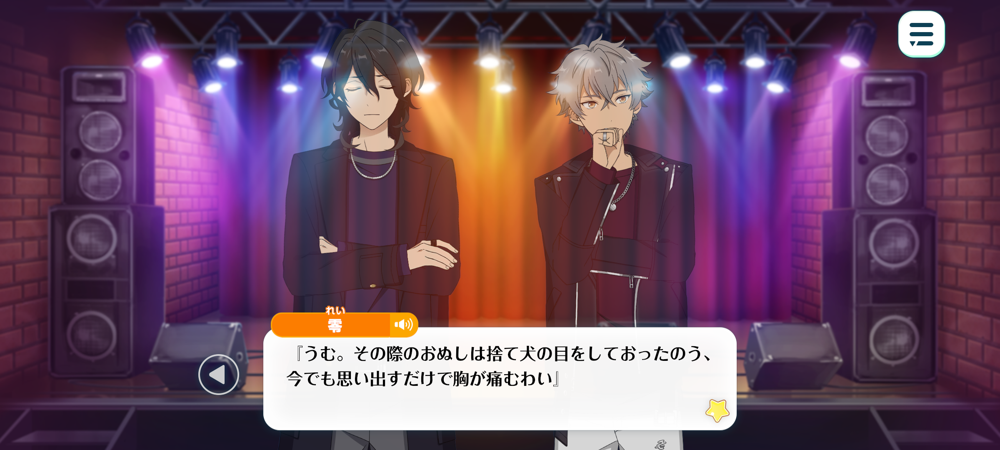

PSYCHOBREAK — Chapter 9



Koga: (But wasn't that a bit further down the line?)
(Actually, I remember having pretty much the same conversation as the one we just had. But back then, I was feelin' pretty down in the dumps—)
(I don't think I was that cheerful and full of energy, though.)
Rei: (Indeed. You had the eyes of an abandoned puppy back then. Even now, the memory alone is enough to make my heart ache.)
(You softened my heart, and I decided I ought to do something to help you.)
Koga: (Heh. You're awfully kind, Sakuma-senpai.)
Rei: (The truth is, I felt guilty.)
(Whilst I was busy sulking and turning a blind eye, someone was suffering because of me...)
(It was only when I saw that lonely look in your eyes that I finally understood.)
(I had been making an entirely innocent child suffer the very same loneliness that I myself had once endured.)
(Once that truth dawned upon me, I was overcome with remorse.)
(And so, in an attempt to atone for my sins, even if only in some small measure, I donned the same clothes as you and sang the song you wished to hear.)
(—And thus, UNDEAD was born.)
Koga: (Yeah. And UNDEAD's debut performance was a battle: the subjugation of the delinquents.)
(Shitty Glasses took care of all the paperwork. 'N since the members had changed, we figured, why not change the unit name while we're at it?)
(I racked my brains over it, listened to all sorts of people's suggestions, and in the end, I chose a name with a wish behind it.)
(—UNDEAD.)
(Then I brought Adonis, who didn’t seem like he had anywhere else to go, into the group, and the two of us started takin’ lessons together.)
(And finally, you came back from wanderin' overseas and, thankfully, became our leader.)
(For some reason, you brought Hakaze-senpai with you, too, and that's how we ended up with the four-member line-up that makes up UNDEAD today.)
Rei: (Truth be told, I only ever intended to help out temporarily.)
(I left all the paperwork to Hasumi-kun, and before I knew it, he'd made me leader without even consulting me. And to make matters worse, I found myself unable to leave the unit. What a predicament...)
(What on earth was he thinking?)
(Was it simply to spite me, I wonder? Hasumi-kun does occasionally resort to that sort of underhanded trick, after all.)
Koga: (Nahh. Maybe Shitty Glasses was tryin' to make a place for you to belong whilst you were wanderin' aimlessly overseas.)
(He gave you somethin' to keep you anchored, UNDEAD, so you wouldn't just wander off and disappear again.)
(Guess he was prayin’ you'd find somewhere you could call home and finally settle down.)
Rei: (Kukuku. Though he is a touch peculiar, Hasumi-kun is a man of the cloth, after all. He's rather good at praying, isn't he?)
(Back when I was in Deadmanz, he was weak, and his prayers couldn't reach me. They weren't enough to bring the monster I was to heel.)
(But the prayers, or rather, the spell, cast by Hasumi-kun, who had helped build up the Student Council and grown stronger himself, managed to bind me fast.)
(He really did get the better of me.)
(Having been sealed away in such a comfortable place, I don't even feel the urge to escape.)
(But I digress. In this dream, it seems the events of the past are unfolding at a greatly accelerated pace. It's rather like watching a film for the second time and simply fast-forwarding through it. Fast-forward, fast-forward~ ♪)
(And that is why I interfered with my past self - to hasten my return home.)
Koga: (But is it really okay to interfere like that? What if you end up affectin' the past?)
(Couldn't that make things happen that were never supposed to happen in the first place?)
Rei: (In fact, that has already happened. History was distorted from the very beginning, even before I ever interfered.)
(This is a distorted version of history. Under normal circumstances, the delinquents would never have been such a formidable force that we'd struggle so much to defeat them. Nor would they ever have been called ‘vampires’.)
(Someone has tampered with the past.)
(And I have a bone to pick with that someone. Most likely, they are the mastermind behind this entire series of incidents.)
(We must anticipate their next move, and crush them should they attempt to harm us.)
(That is how we shall claim the future we deserve.)
(Will you help me, Koga?)
Koga: (Duh, 'course I will. Past Sakuma-senpai listened to my request.)
(No one would've blamed you if you'd just ignored the whinin' of some dog-like brat.)
(It wasn't as though helping me would do you any good.)
(But you still nodded and agreed. You didn't brush off the request of some soft-hearted brat. You took it on without hesitation, like someone I could count on.)
(I guess that's just because you're the kind of idiot who can't turn down anyone's requests, not because you particularly liked me or anythin'.)
(Still, it made me happy. I imagine that's what heaven must be like. And even though there've been plenty of things that've got me down, and plenty of shitty times, right up until now—)
(I've been happy, bein' a part of UNDEAD.)
(This time, it’s my turn, Sakuma-senpai.)